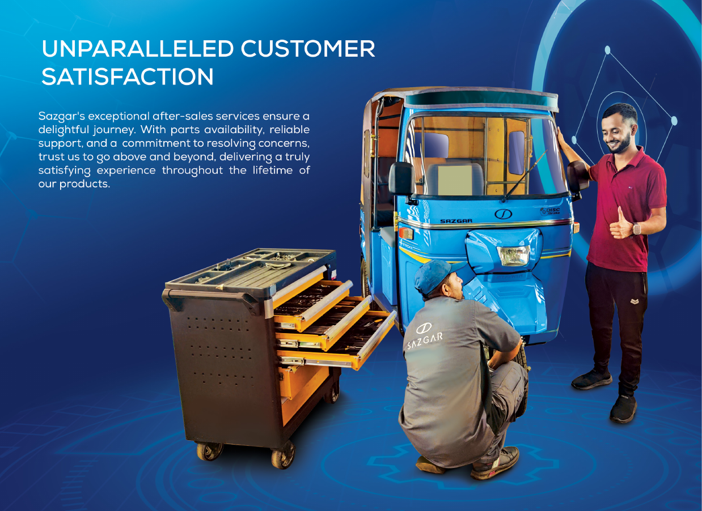

Keeping mobility working
SAZGAR’s brochure describes an after-sales approach centered on delightful customer experience, reliable support, parts availability, and prompt resolution of concerns.
- Customer-oriented after-sales service
- Parts availability and service support
- Prompt attention to customer concerns
- Long-term product ownership experience
This page is presented by UAAMC for general awareness. Please contact UAAMC for additional information about technical support and warranty-related concerns.

Customer-firstService philosophy
PartsAvailability focus
ReliableSupport commitment
PromptConcern resolution